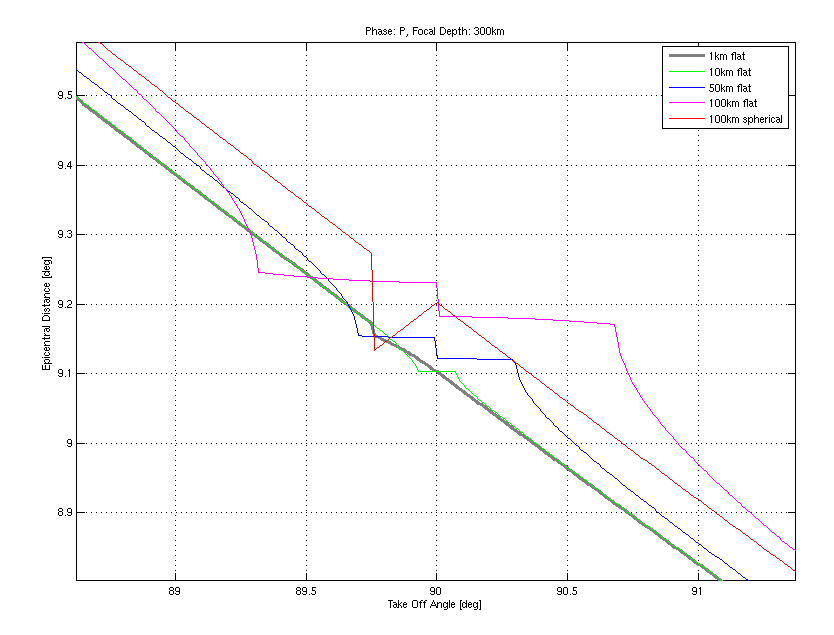
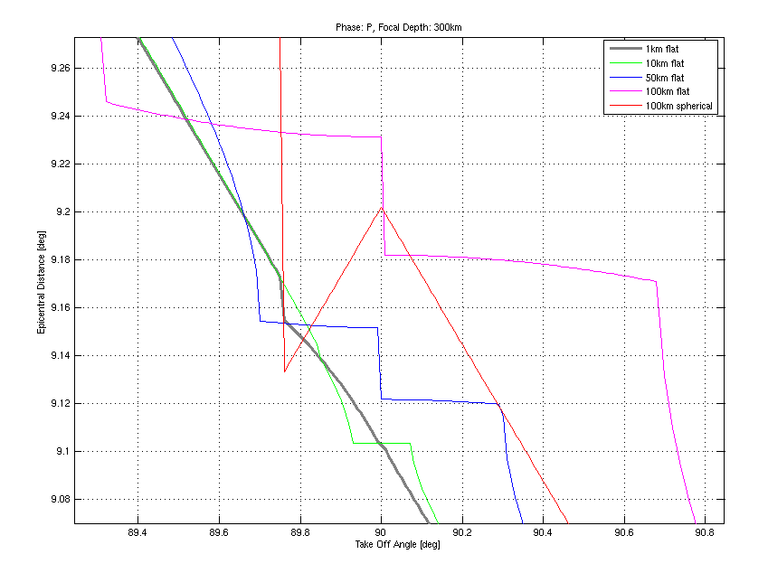

A ray that leaves a deep source horizontally has no reason to leave the source depth - it will circle around at this depth eternally (or until anelasticity eats it). Therefore the epicentral distance as function of take off angle (Δ(α)) should have a singularity for α=90°.
In crude depth samplings, rays with takeoff angles close to 90° are also affected. I must admit that I currently do not understand exactly what happens here, but the plots below show the effect quite clearly.
As with other effects, this one also diminishes when the depth sampling gets finer.
|   |
|
Epicentral distance reached by nearly horizontally starting P waves for a focal depth of 300km and various depth samplings. The right plot is acloseup of the left one, showing that Δ(α) can have a quite complex structure near α=90° The above plot was produced using the following commands (and a few manual adjustments): figure(1); clf; hold on; h=300; dz=0.01; [dist,depth,rayparm,angles]=mkdepthbydist(iasp91_1km,h,dz,'P'); [angles,sorter]=sort(angles); dist=dist(sorter); plot(angles,dist,'k-'); [dist,depth,rayparm,angles]=mkdepthbydist(iasp91_10km,h,dz,'P'); [angles,sorter]=sort(angles); dist=dist(sorter); plot(angles,dist,'g-'); [dist,depth,rayparm,angles]=mkdepthbydist(iasp91_50km,h,dz,'P'); [angles,sorter]=sort(angles); dist=dist(sorter); plot(angles,dist,'b-'); [dist,depth,rayparm,angles]=mkdepthbydist(iasp91_100km,h,dz,'P'); [angles,sorter]=sort(angles); dist=dist(sorter); plot(angles,dist,'m-'); [dist,depth,rayparm,angles]=mkdepthbydist(iasp91_100km_sph,h,dz,'P'); [angles,sorter]=sort(angles); dist=dist(sorter); plot(angles,dist,'r-'); hold off; legend('1km flat','10km flat','50km flat','100km flat','100km spherical'); box on grid on xlabel('Take Off Angle [deg]'); ylabel('Epicentral Distance [deg]'); title('Phase: P, Focal Depth: 300km'); |